From Newton to Lattice Boltzmann
How ten-to-the-twenty-third individual particles collapse into a handful of fluid equations — and how that same collapse, run in reverse, becomes an algorithm.
- Newton's law, written two ways — the destination up front
- Newton — in principle, everything is known
- Liouville — particles to probability
- BBGKY — reducing the information
- Molecular chaos — the decisive approximation
- The Boltzmann equation
- Moments — how f becomes a fluid
- Equilibrium
- BGK — relaxation instead of collisions
- Chapman–Enskog — recovering Navier–Stokes
- Lattice Boltzmann — from theory to algorithm
- Boundaries
- Two roads, one destination
- The architecture in ten seconds
There are really three descriptions of the same fluid, and the entire chapter is about moving between them:
| Level | What it describes | Variables |
|---|---|---|
| Microscopic | Individual particles | xᵢ, vᵢ |
| Mesoscopic / kinetic | Distribution of particles | f(x, v, t) |
| Macroscopic | Fluid fields | ρ, u, P |
The word mesoscopicthe middle layer, neither individual particles nor a smooth continuum — a statistical distribution that stands in for both matters more than it looks. Lattice Boltzmann lives in that middle layer. It never tracks molecules directly, and it never solves Navier–Stokes directly either.
Newton's law, written two ways
The microscopic starting point:
Acceleration equals force over mass — ordinary Newton's second law, except F(N) signals that the force on any one particle depends on every other particle in the system.
And the macroscopic form — where this whole chapter is headed:
The entire chapter is the bridge connecting these two equations. One describes a single particle; the other describes a continuum field. That bridge has several rungs — Liouville, BBGKY, molecular chaos, Boltzmann, BGK, Chapman–Enskog — each one below.
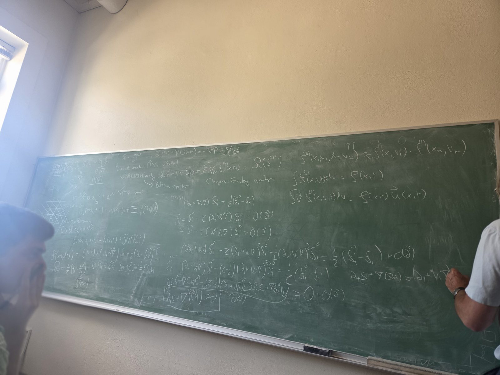
Newton: in principle, everything is known
For any particle i, ordinary Newtonian mechanics gives:
With N particles, the complete microscopic state is the full list of every position and velocity:
Newton's equations aren't inadequate — there are simply far too many of them to track. And, importantly, nobody actually wants to know where molecule number 8.2×10¹⁹ went. What's wanted is density and velocity — bulk, statistical quantities. So statistical mechanics changes the question from "where is every particle?" to "how are particles statistically distributed?" That reframing is the seed of everything that follows.
Liouville: replace trajectories with a distribution
Introduce the N-particle phase-space densitya single function that assigns a probability to every possible simultaneous arrangement of all N particles' positions and velocities, f(N)(x₁,v₁,…,xₙ,vₙ,t). For the forces Fᵢ, its evolution is given by the Liouville equationan exact conservation law stating that probability in phase space is neither created nor destroyed — it only flows:
Nothing mysterious has happened here. Newton followed individual trajectories through phase space; Liouville follows the probability density of possible trajectories through that same space. It is, at heart, just a conservation equation — probability flows through phase spaceexactly the way mass or charge flows through ordinary space: it can move around but the total is fixed — nothing invented, nothing approximated.
BBGKY: perhaps we don't need everybody
Define reduced distributionsfunctions that describe only one or a few particles at a time, having averaged away everyone else. The one-particle distribution f(1)(x₁,v₁,t) asks what a single representative particle statistically does. The two-particle distribution f(2)(x₁,v₁,x₂,v₂,t) contains correlations between pairs. And so on for f(3), f(4), …
Integrating the unwanted particles out of the Liouville equation produces something annoying: the equation for f(1) requires knowing f(2); the equation for f(2) requires f(3); and so on, up to f(N). That's the BBGKY hierarchyBogoliubov–Born–Green–Kirkwood–Yvon — five people who independently derived the same infinite chain of coupled equations around 1946.
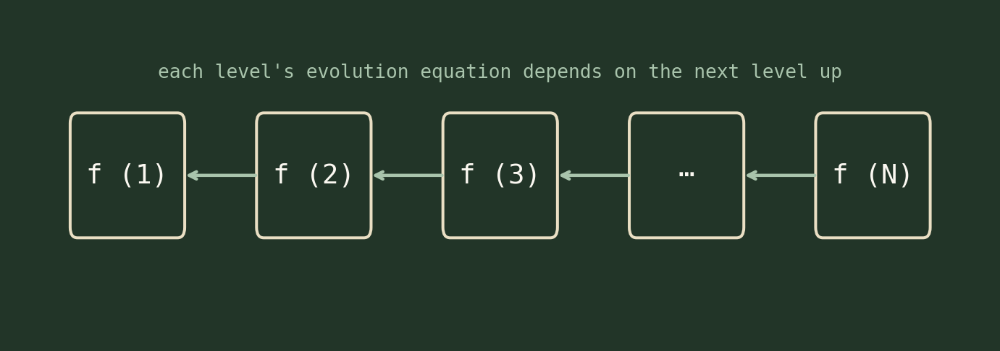
Why does this happen? Because particles collide — you cannot predict particle 1 statistically without knowing something about the particle it's about to hit. BBGKY has reduced the dimensionality of each individual description, but the problem is still not closeda system of equations is "closed" once it contains no reference to any unknown higher-order quantity — right now it always does.
Molecular chaos
For a dilute gas, Boltzmann's assumption is that particles arriving at a collision are statistically uncorrelated immediately before they meet:
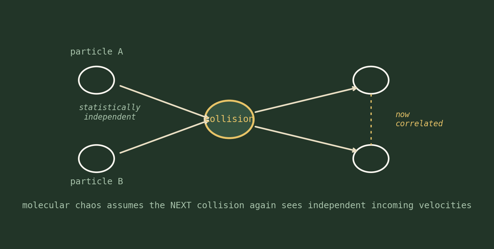
This is worth sitting with, because the intuitive story is subtly wrong. It is not that correlations disappear because collisions are frequent — in fact, collisions create correlations. The molecular chaosthe assumption that colliding particles' incoming velocities are independent, even though their outgoing velocities are not — justified for dilute gases in the kinetic limit hypothesis simply neglects the correlations that already exist going into the next collision. When the next collision is described, the incoming pair is once again approximated as uncorrelated. That single move is what closes the infinite hierarchy into one equation.
One distribution instead of 10²³ trajectories
Define the one-particle distribution f(x,v,t) — this is f(1) from Part III, with the superscript dropped now that it's the only distribution left in play; f(2), f(3), and the rest of the hierarchy have already done their job and exited the derivation via molecular chaos. The Boltzmann equationthe single closed equation, in six-dimensional position-velocity space, that replaces the entire N-particle problem reads:
Without external body forces, this simplifies to:
This decomposes into two pieces that matter enormously for everything downstream:
Particles, at bottom, just move → collide → move → collide → … Lattice Boltzmann turns exactly that structure into an algorithm.
Moments
f is not yet density or velocity — it's a distribution over velocities at every point in space. Macroscopic quantities are recovered by taking momentsweighted integrals of f over all possible velocities — each power of v extracts a different physical quantity over velocity space.
This is one of the deepest ideas in the whole subject: you don't need to know every detail of f to describe ordinary fluid motion. You mostly need its first few moments.
Equilibrium
Left alone, without macroscopic gradients driving it away, repeated collisions push the velocity distribution toward local thermodynamic equilibriumthe state where no further net change occurs from collisions alone — classically, a Maxwellian bell curve in velocity:
The conceptual point, before any normalization detail: collisions drive f toward feq. Unfortunately, real Boltzmann collision integrals are analytically unpleasant. Enter BGK.
Replace complicated collisions by relaxation
The BGK approximationBhatnagar–Gross–Krook, 1954 — replaces the true collision integral with a single exponential relaxation toward equilibrium writes:
If f is far from equilibrium, the correction is large; if f already equals feq, the collision term vanishes.
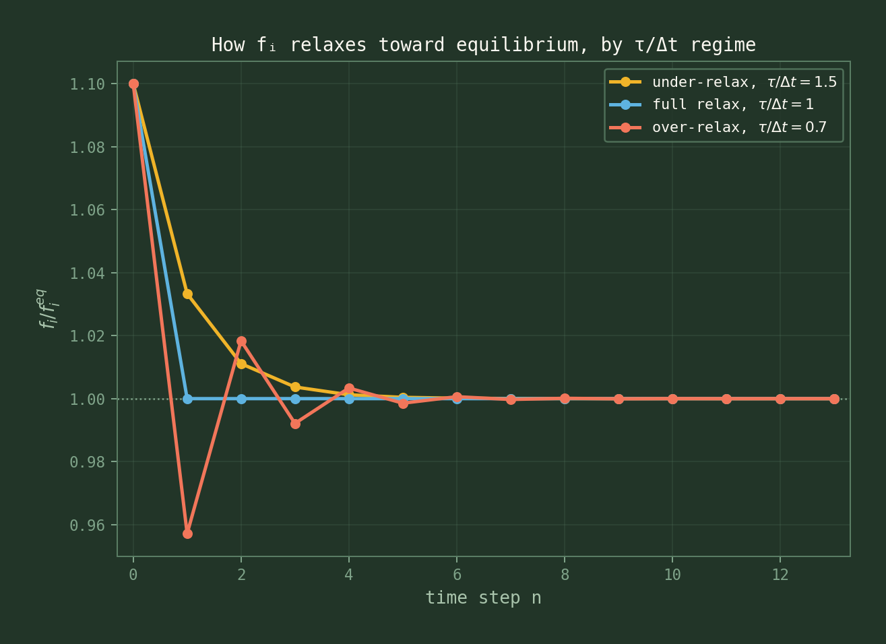
Chapman–Enskog
Why does ordinary fluid mechanics work at all, if what's really happening underneath is particles and collisions? Because when the molecular scale is much smaller than the macroscopic scale — the Knudsen numberthe ratio of the mean free path between collisions to the size of the system being studied is small —
— the distribution stays close to local equilibrium, and can be expanded as a small perturbation around it:
The equilibrium part f(0) gives ideal-fluid behavior. The small departure f(1) contains transport — in particular, viscosity.
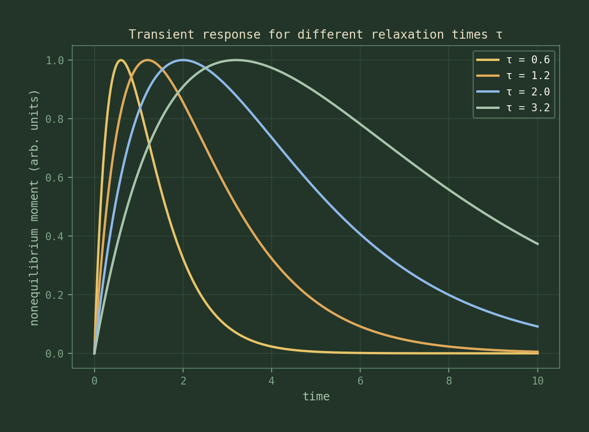
Taking moments of the expansion at the right orders yields the continuum equations directly:
That arrow is the central theoretical bridge of the whole chapter.
Deducing the continuity equation, explicitly
It's worth actually watching this fall out, rather than taking it on faith. Take the zeroth momentmultiply the kinetic equation by 1 and integrate over all velocities — extracts the mass-conservation content of the BGK equation — integrate every term over v:
On the left, swap the order of integration and differentiation, and use the moment definitions already established:
The right-hand side is the interesting part. Whatever a physically sensible collision operator does, it cannot create or destroy particles — collisions only redistribute existing particles among velocities. That's a collision invarianta quantity left unchanged by any collision — mass, momentum, and kinetic energy are the three classical ones, and it means:
This vanishes because feq is constructed, by definition, to have exactly the same density as f — so their zeroth moments cancel identically. No approximation is used here at all.
What's left is the continuity equation, exactly:
Where Lattice Boltzmann actually came from
Before the discretization story, it's worth knowing that LBM didn't arise purely by discretizing the continuous BGK equation — historically, it grew out of a completely different-looking model, and the connection to a much older idea in statistical mechanics is worth making explicit.
Recall the canonical ensemble result from ordinary stat mech: for a system with Hamiltonian H at temperature T, the probability of a configuration goes as the Boltzmann weightthe exponential factor e^(−H/kT) that assigns higher probability to lower-energy configurations — the foundation of equilibrium statistical mechanics:
The point of bringing this up: a lattice of discrete, Boolean-like microscopic variables (spins up/down; particle present/absent) is a completely standard object in statistical mechanics, and its macroscopic behavior emerges the same way in every such model — by ensemble averagingaveraging a noisy microscopic variable over many realizations, or over a probability distribution, to get a smooth macroscopic field over the microscopic noise.
Lattice gas automata — the direct ancestor
The actual predecessor to LBM is the lattice gas automatona cellular-automaton model where particles hop between lattice sites and undergo discrete, momentum-conserving collisions — everything is either 0 or 1, present or absent, and it has its own two-step history. The first version, the HPP modelHardy, Pomeau, and de Pazzis, 1973 — the original lattice gas automaton, ran on a square lattice with four velocities per node — simple, but its square symmetry turned out to be too crude: it doesn't produce isotropic (direction-independent) macroscopic behavior, so it can't actually simulate a real fluid correctly. It took until 1986 for Frisch, Hasslacher, and Pomeau to fix this with the FHP modela lattice gas automaton on a triangular lattice with six velocities per node — the extra directions give it the isotropy HPP lacked, and it's the model that first genuinely worked as a fluid solver, replacing the square lattice with a triangular one — six directions per node instead of four, giving each site hexagonal-looking connectivity — which is why the board's third grid sketch, drawn with diagonal cross-hatching rather than a plain square grid, likely depicts this FHP geometry specifically rather than D2Q9.
Define a Boolean occupation number ni(x,t) ∈ {0,1}: does a particle moving with velocity vi occupy site x at time t? Its update rule is:
This works — it genuinely produces fluid-like behavior in simulation — but it's noisy. Because ni is strictly 0 or 1, any single run is full of statistical fluctuation, and extracting smooth macroscopic fields requires averaging over many independent runs or large spatial patches.
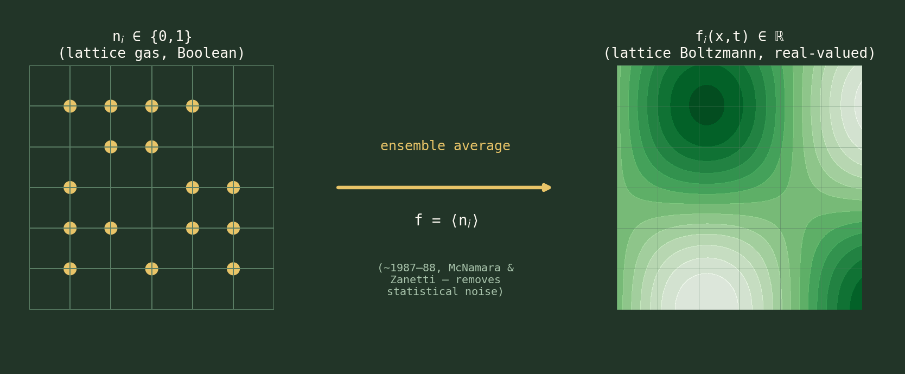
With f established as a real-valued field, its own update rule follows the same shape as the automaton it replaced, but now with a general collision function Ωi acting on real numbers instead of bits:
Specializing Ωi to the BGK form gives back the equation this chapter has already been building toward:
Chapman–Enskog, done properly, on the discrete lattice equation
Taylor-expand the streaming step itself around (x,t):
That expansion alone is just a setup. Carried through to completion, it's the actual proof that LBM's zeroth-order hydrodynamic limit is the continuity equation — not just a plausibility argument. Start from the same moment definitions used for molecular chaos, now restated on the lattice as solvability conditionsconstraints the equilibrium fᵢ⁰ must satisfy so that its moments match the true moments of fᵢ exactly, order by order:
Substitute the BGK collision term into the Taylor-expanded streaming equation, and iteratereplace fᵢ by its leading-order equilibrium value fᵢ⁰ inside the correction terms, since the deviation fᵢ − fᵢ⁰ is itself already O(∂) — a standard perturbative move that avoids solving for the unknown correction before it's needed:
Now sum this equation over every discrete direction i. Two things vanish in that sum: the second-order term, because it reduces to gradients of quantities the equilibrium distribution is already constructed to conserve, and Ωi(2) itself, because collisions — by construction — cannot change total mass.
What survives is just the sum of the first term, which by the moment constraints above is exactly ∂ₜρ + ∇·(ρu):
This is the same continuity equation Part IX reached from the continuous Boltzmann equation's zeroth moment — but reached here entirely on the discrete lattice, straight from the collide-and-stream update rule LBM actually runs. That the two routes — continuous kinetic theory taken to its hydrodynamic limit, and the discrete algorithm taken to its own — land on the identical equation is precisely the consistency check that makes LBM trustworthy as a real Navier–Stokes solver rather than a numerical trick that merely resembles one.
BGK is not yet Lattice Boltzmann
The continuous BGK equation still has continuous position and continuous velocity, f(x,v,t). LBM adds one more discretization: instead of every possible molecular velocity, choose a small finite set c₀, c₁, …, c_Q₋₁, and define fi(x,t) as the population moving in discrete direction cᵢ.
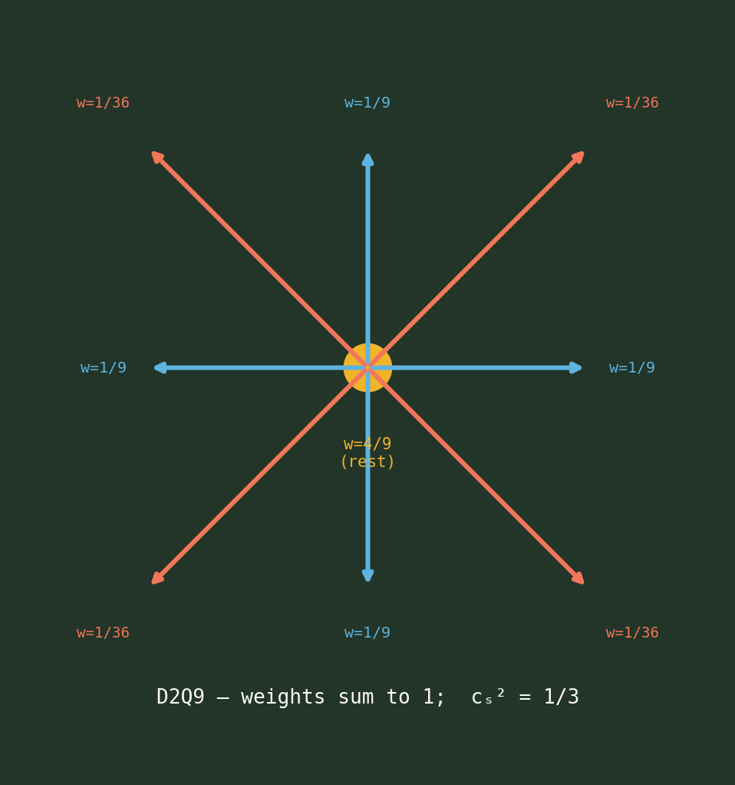
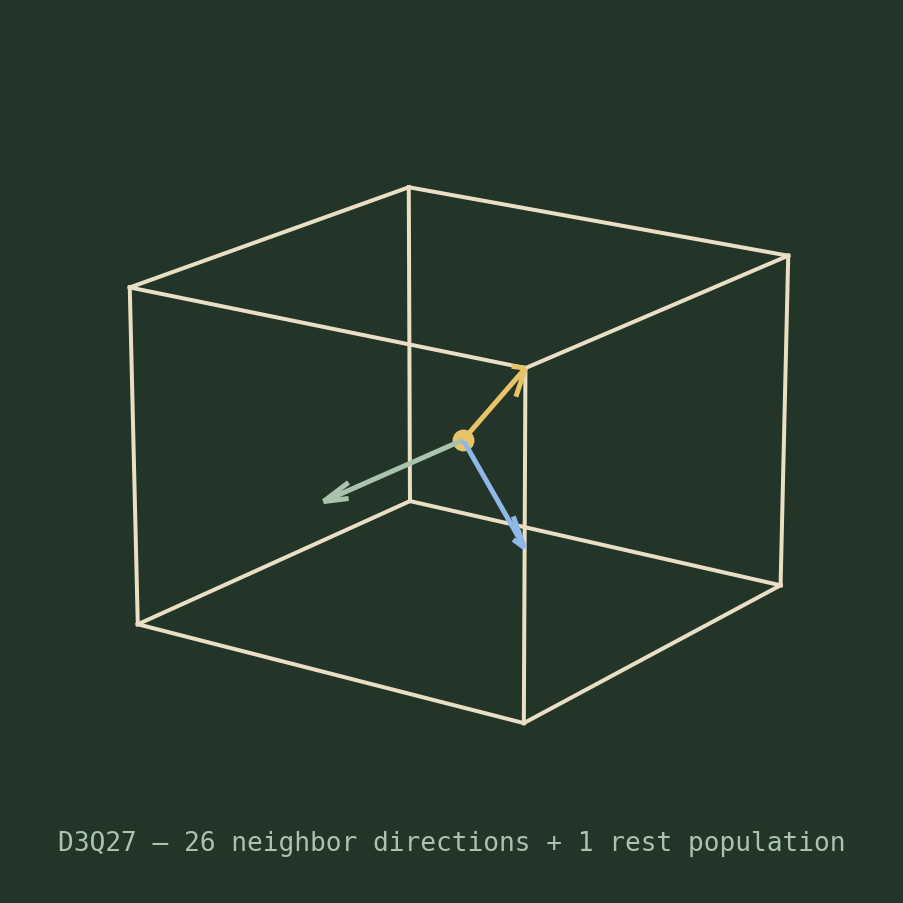
Each direction i carries a fixed weight wi, and the whole set is built so that its statistical moments match those of a true Maxwellian up to the order hydrodynamics needs. For D2Q9 specifically: w0=4/9 for the rest population, w1–4=1/9 for the four axis directions, w5–8=1/36 for the four diagonals — and the lattice speed of sound is fixed at cs²=⅓ (in lattice units, Δx=Δt=1). With those weights and velocities in hand, the actual discrete equilibrium distributionthe lattice version of the Maxwellian from Part VII — a low-order polynomial in u rather than an exponential, built to reproduce the exact same low-order moments — the thing every collision step relaxes toward — is:
This is a truncated polynomial expansion of the continuous Maxwellian in powers of u — not an approximation invented for convenience, but the specific truncation that keeps the moments matching correctly. Because it's only correct to O(u²), LBM built this way is formally valid only for weakly compressible flow — Mach number Ma=u/cs well below 1 — which is why LBM is a poor fit for transonic or supersonic problems without further modification.
Before committing to a fixed lattice, it helps to remember what's being approximated: a real particle's path is continuous and erratic, and the lattice only samples it at discrete points.
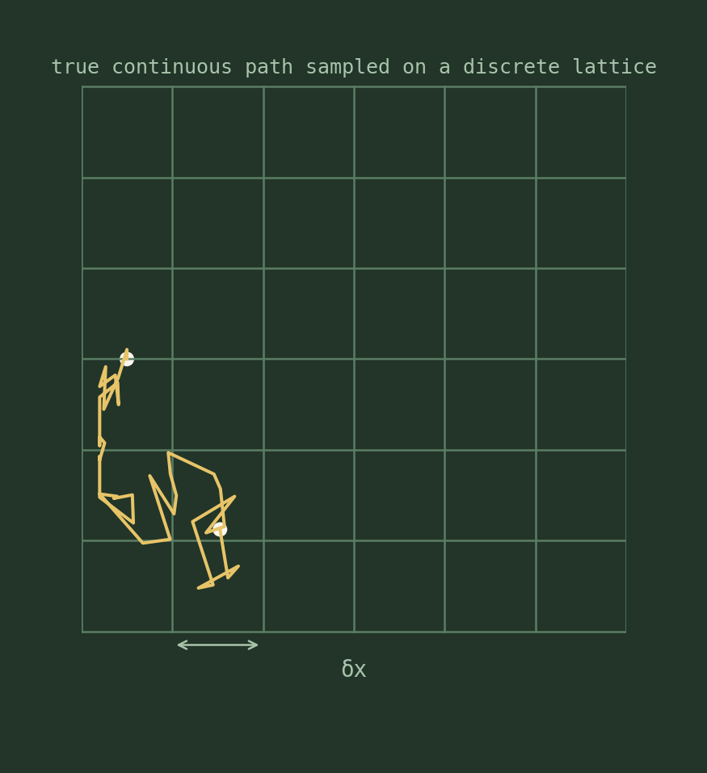
The algorithm
Populations relax locally toward equilibrium, node by node.
Post-collision populations travel outward to neighboring lattice nodes.
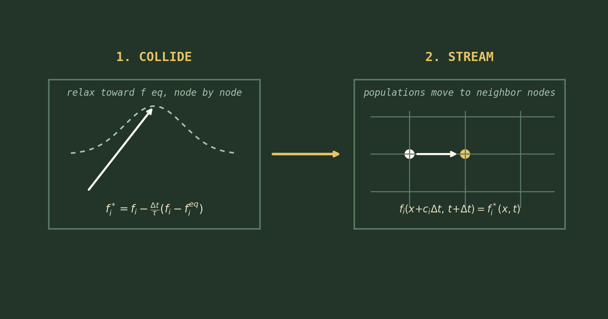
Almost comically simple to code — and yet the collective behavior recovers continuum fluid mechanics. That's the charming trick at the heart of your subfield.
Getting fluid variables back out
At every node there are several fᵢ's, but the fluid is what's wanted. Take moments again — now as finite sums rather than continuous integrals:
This closes the circle: f(x,v,t) becomes fᵢ(x,t), and ∫f dv becomes Σᵢfᵢ. Velocity-space integrals became finite sums — that's precisely what the word lattice is buying you.
Why τ matters physically
The relaxation time isn't merely a numerical knob — it determines how quickly nonequilibrium disturbances erase themselves, and therefore sets the fluid's viscosity directly:
A second, less-visible number comes along for free: the bulk viscositythe fluid's resistance to pure compression, as opposed to shear — normally zero for a monatomic gas, but nonzero here as an artifact of the isothermal equation of state LBM uses works out to νB = ⅔ν. It doesn't appear explicitly in the collision rule, but it's baked into every standard isothermal LBM simulation whether or not it's ever mentioned.
That's the same microscopic-to-macroscopic connection Chapman–Enskog establishes, now made numerically concrete and tunable.
A subtlety: thermal vs. nonthermal energy
It's tempting to assume the second velocity moment of f automatically gives the correct thermal energy of the fluid — it doesn't, in general, and this is a genuine caveat associated with Hiroshi Otomo'sa researcher whose work addresses energy accounting and boundary treatment in LBM work on the subject. Two quantities that look superficially similar are not the same thing:
The left side is a nonthermal energya velocity-moment quantity that arises mechanically from the discrete velocity set and collision rule, but does not correspond to physical thermal motion — an artifact of the discrete lattice's own structure — not the fluid's actual kinetic energy, and not the same object as the mean-squared displacement ⟨δx²⟩ that genuinely characterizes particle motion.
The correct thermal energy density instead comes from the properly normalized second moment:
This is the standard equipartition result — matching this moment exactly, rather than just approximately, is what a properly constructed thermal LBM scheme has to get right, and it's precisely where naive extensions of isothermal LBM can go subtly wrong.
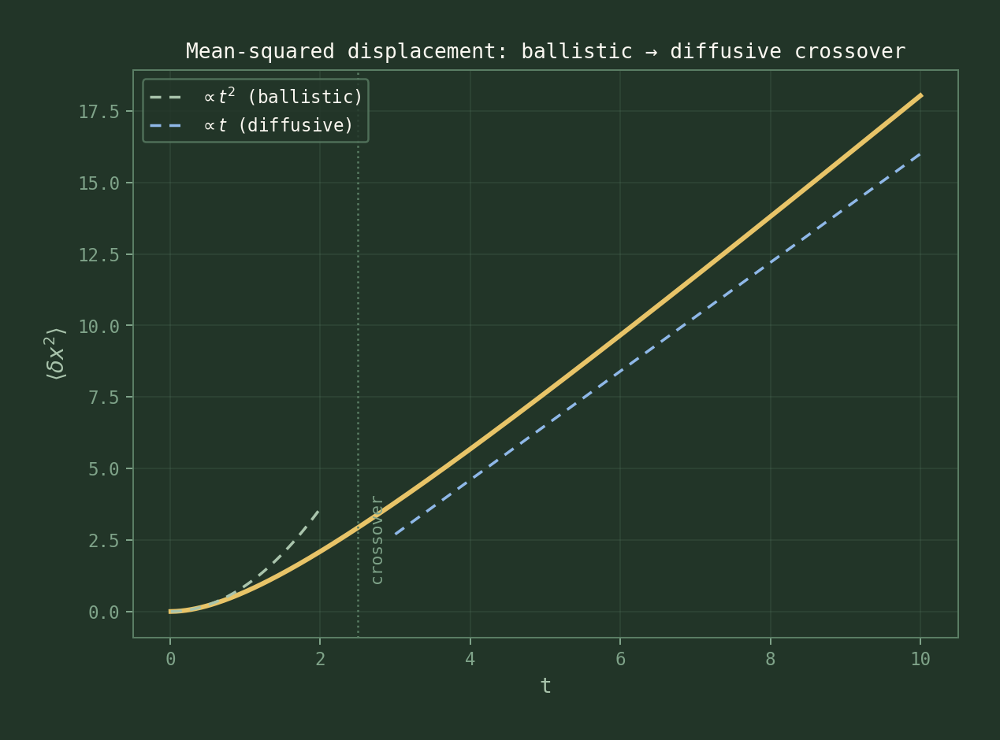
Where the collide-stream machine starts demanding paperwork
At a solid wall, some population tries to stream into solid material — that's not physical, and something has to be done about it. The basic answer is bounce-backreflecting an incoming population straight back along the opposite lattice direction it arrived from, which approximately imposes no-slipfluid velocity equals zero exactly at the wall — the standard physical condition for a viscous fluid touching a solid boundary behavior.
The harder version of this problem — and the one Board 2 spends two separate plots on — is that the lattice is a rigid Cartesian grid, but the physical wall being modeled is usually smooth and curved. Read the two plots as a before/after pair.
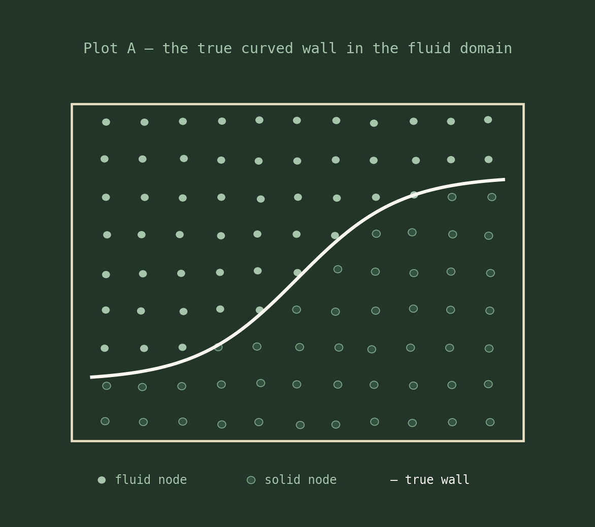
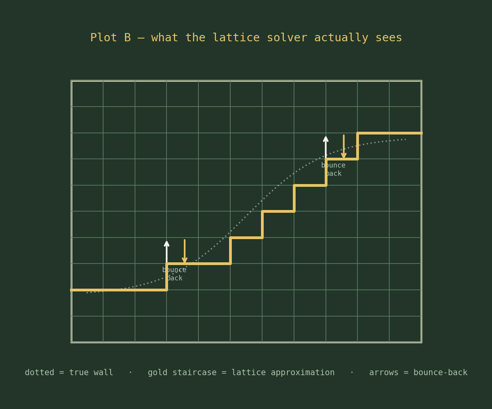
Put the two together and the actual research problem becomes visible: naive bounce-back on the raw staircase gets the wall location right only to within one lattice spacing, which is a real, first-order error. This is exactly the gap Otomo's work — and curved/interpolated boundary schemes generally — closes: instead of snapping fully to the nearest grid line, they interpolate between the fluid and solid nodes straddling the true curve, recovering something much closer to Plot A's behavior while still only ever computing on Plot B's grid.
The interpolation itself is parameterized by a fractional distance, typically written qthe fraction of a lattice link that lies between the last fluid node and the true wall — q=0 means the wall sits exactly on the fluid node, q=1 means it sits exactly on the solid node, which controls how the reflected population gets corrected relative to plain bounce-back. The accuracy of the whole scheme is then naturally judged by how close the lattice actually tracks the true wall position relative to the grid spacing itself:
The average positional error of the boundary representation, expressed as a fraction of one lattice spacing — the smaller this ratio, the closer Plot B's staircase tracks Plot A's true curve. This is the practical number a curved-boundary scheme is trying to drive toward zero.
More sophisticated schemes extend this same idea to moving walls, pressure boundaries, and inlets or outlets — but the underlying tension is always the one drawn across these two plots: an on-lattice method modeling an off-lattice world.
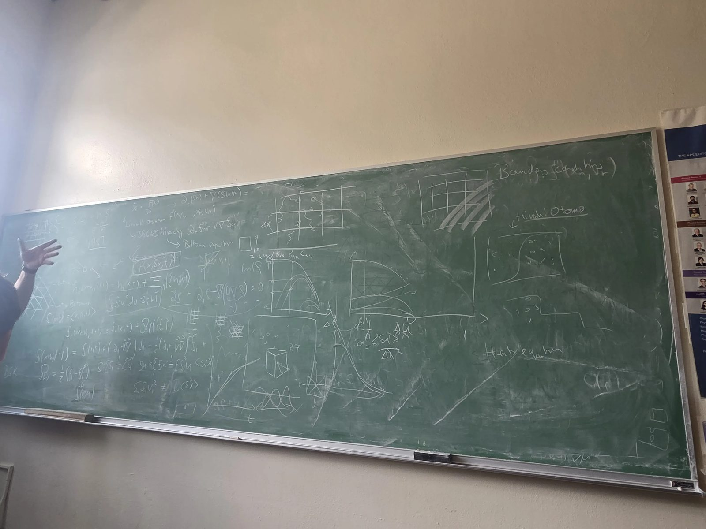
One distinction worth making explicit
Two different roads run through this chapter, and it's easy to fuse them into one without noticing.
— why does kinetic theory produce fluid mechanics?
— how do we exploit kinetic theory to simulate a fluid efficiently?
The lattice-gas history at the start of Part X is a variant of this second road, not a third one — it just arrives at the same discrete equation from the opposite direction, averaging a noisy automaton upward instead of discretizing the continuous Boltzmann equation downward. Both paths converge on the identical fi(x+vi,t+1) = fi(x,t) + Ωi equation, which is exactly why the chapter treats them as one road rather than two.
Chapman–Enskog then reappears a second time as the consistency check confirming that the chosen LBM scheme actually recovers the intended Navier–Stokes equations in its hydrodynamic limit.
The architecture, in ten seconds
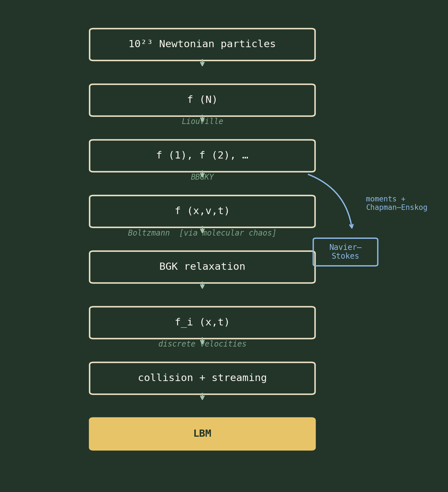
Once this skeleton is fixed, the algebra stops looking like fourteen unrelated tricks. It's one continuous information-compression scheme — particles → distributions → a handful of moments — and LBM's entire cleverness is choosing to compute at the distribution level rather than attacking Navier–Stokes head-on.
↑ back to top